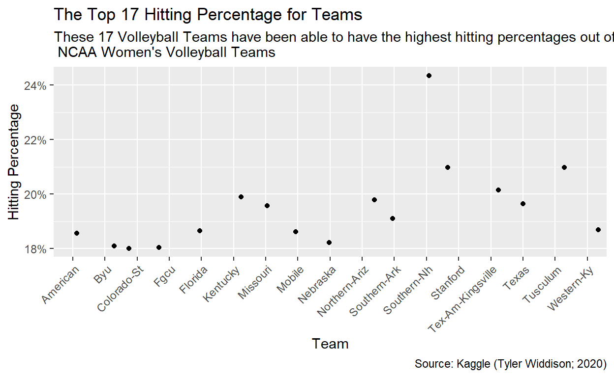
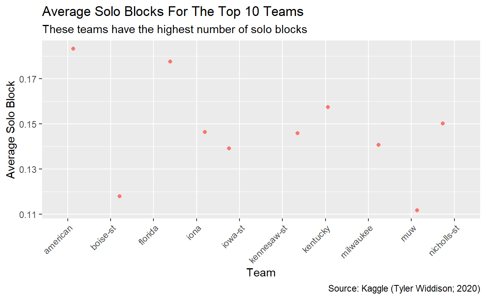
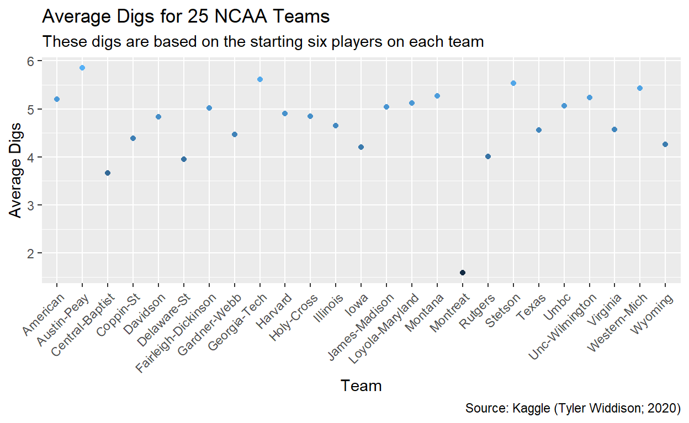

Below are the statistics across the entire NCAA Women’s Volleyball Seasons from 2012-2019!
NCAA Women’s Volleyball statistics revolve around offense and defense specifically attacking and defending. The following data was recorded from the NCAA Women’s Volleyball stats from the 2012-2019 seasons and incorporated many different variables as shown in the excel spreadsheet. The data was filtered down throughout the project in order to display different importance for each specific topic. While several teams are able to attack the ball through their attack attempts there is a very low chance of the team achieving the kill due to a block or a dig leaving the ratio of a kill to attack attempt close to 1:4 or 25% chance of achieving a kill.
Attacking - When one attacks they are trying to hit the ball into the other court and achieve a point for their team
Kill - Getting the point through the attack that they have achieved
Dig - Receiving the attack that the other side tries to enforce onto the other court
Block - Achieving a stop on the attack that the other side tries to turn into a kill.
The graph below symbolizes the relationship between each team’s attack attempts and each team’s kills. As shown below there is a great number of attack attempts per kill. An attack attempt is when one goes up to attack/spike the ball down and fails while a kill means that they have successfully earned the point.
The graph below shows the hitting percentage for the top 17 teams that have been the most successful at earning their kills based on their attack attempts. The highest percentage below is Southern NH that has one of the highest hitting percentage rates at close to 24%.

In the game of volleyball errors occur in many different type of ways some of these include attack errors, ball handling errors, blocking errors, reception errors, and service errors. The graph below shows all of the errors combined per team as a mean throughout a game.
Blocking is an important factor in volleyball and these 10 teams from the NCAA have been able to crush their solo blocks. Solo blocks occur when only one person goes up to perform the block and making it difficult to earn the point. The highest average solo block per game St-Thomas-TX which is still only just above 0.25.

Digs are an important aspect of the game because it allows the team to defend the other attack attempts and gain the opportunity to gain the point. The following graph is in regard to all of the players that participated in the game and started for the team. These 25 NCAA teams have

As shown with the data above the number of NCAA Women’s Teams have been able to accomplish a great number of things including putting up big attack numbers, defending numbers, and errors. These different statistics have been able to provide us with a great view of the data and the great amounts of achievements these teams have been able to accomplish.